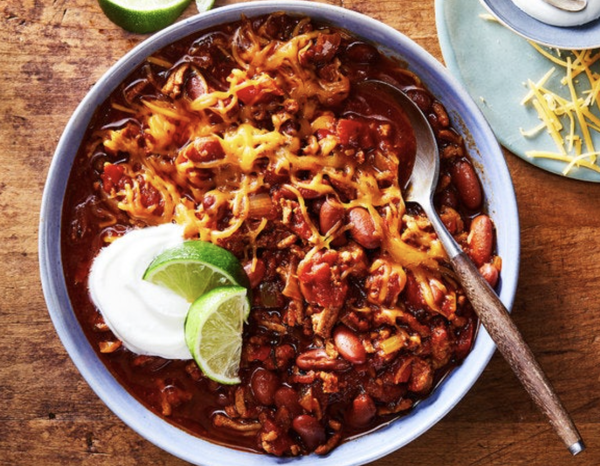

Turkey Chili

Turkey chili that we served over rice and topped with cheddar cheese.
Recipe link would be found here.
Rating: 4 stars
Changes
- Poblano Pepper instead of Jalapeno
- Used half the amount of Chili Powder
- Regretted putting in Kidney Beans. Might do half amount next time or none at all.
Groceries
- Ground Turkey
- Garlic
- Red Bell Pepper
- Celery
- Yellow Onion
- Poblano Pepper
- Oregano
- Bay Leaf
- Chili Powder
- Diced Tomatoes
- Chicken Broth
- Red Kidney Beans
- Cheddar Cheese
- Rice
Home